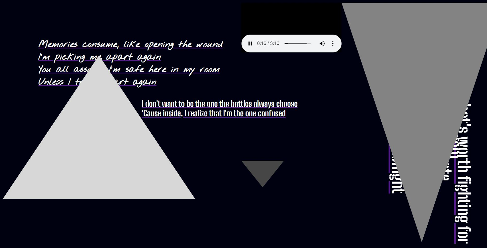
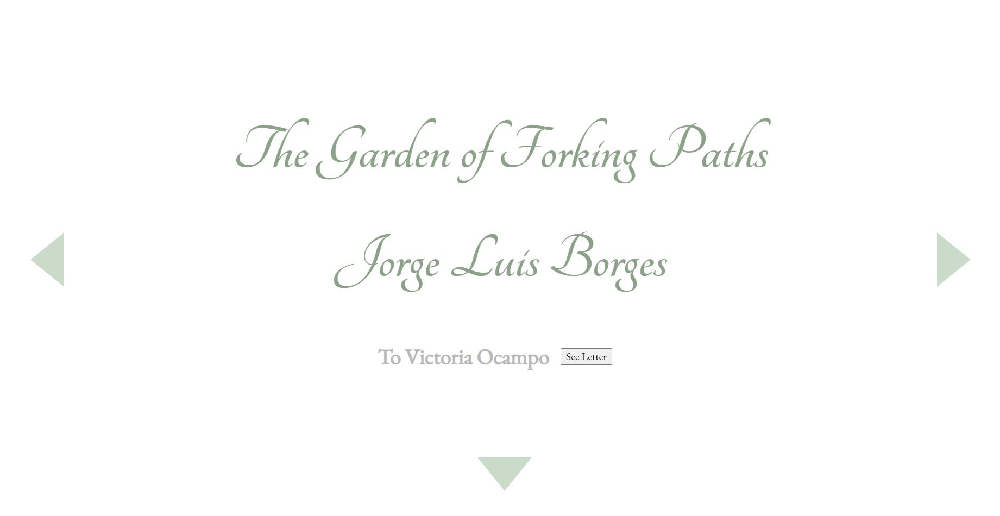

Michelle Wang | GitHub Pages
Core 1 Int
PUCD 2035
Core 2 Int Project 1:
Cross-Platform Storytelling
Core 2 Int Assignment
Composition - Laws of UX
Core 2 Int Assignment
Animation Station - Lyrical Comp

Core 2 Int Project 2:
Stories as Networks

Core 2 Int Assignment
Works of Art
Core 2 Int Assignment
Airtable Promotional Website
Core 2 Int Project 3:
Elastic Collections